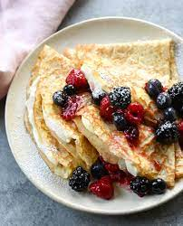

The Basic Crepe

This is just a classic Crepe!
ingredients
- Flour
- Eggs
- Milk
- Water
- Salt
- Butter
Steps
- Whisk the flour and eggs
- Gradually add the milk and water
- Scoop the batter onto a hot griddle
- Cook until lighlt browned on the bottom
- Flip and continue cooking until done on both sides
Crepe filling ideas
You can fill crepes with just about anything! Peanut butter, fresh fruit, Nutella, cheese... the list is endless! Have fun and enjoy.